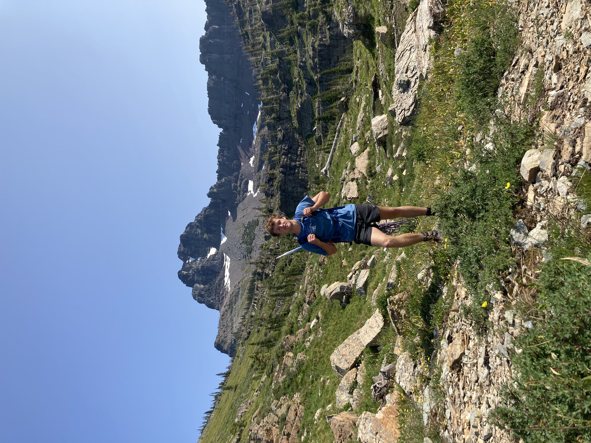
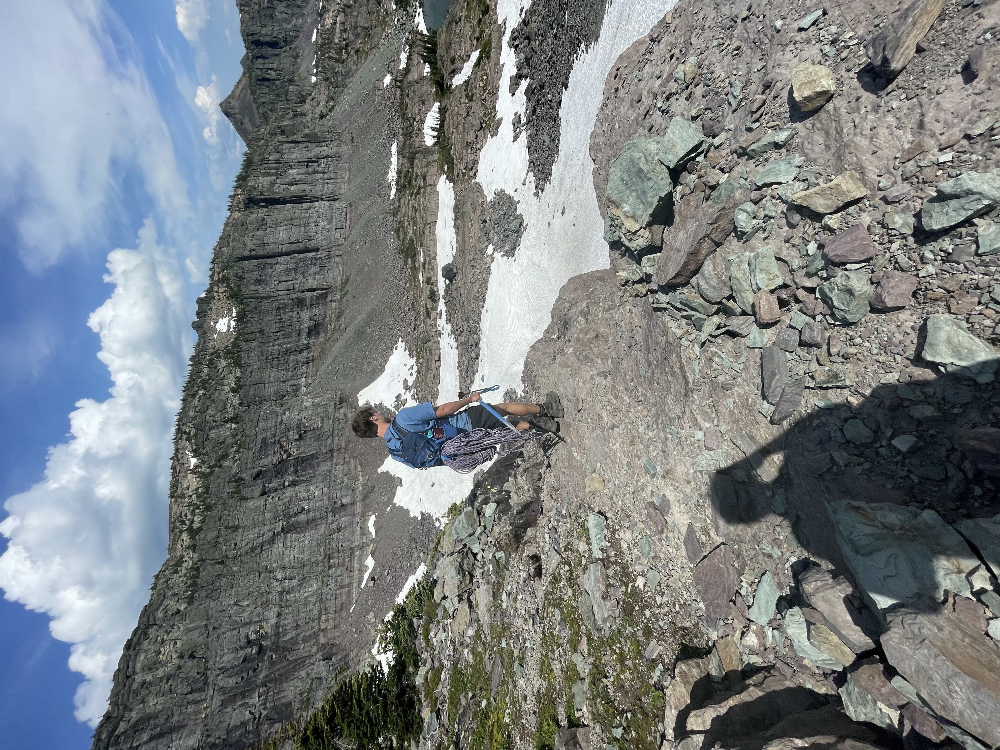
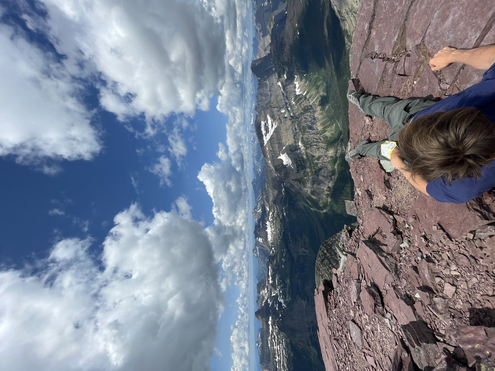

There’s something special about being out on the trail — the quiet, the views, and the rhythm of just putting one foot in front of the other. Hiking is how I reset, disconnect, and explore the world around me at my own pace. Whether it's a weekend trek or a quick morning walk, it never gets old.


